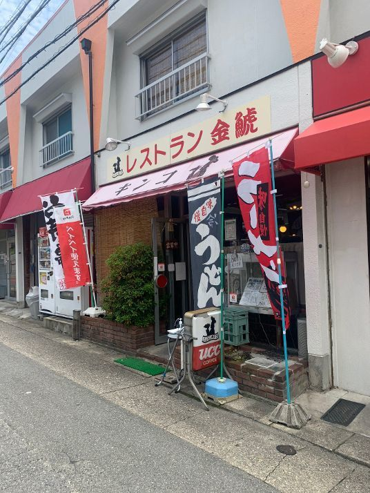
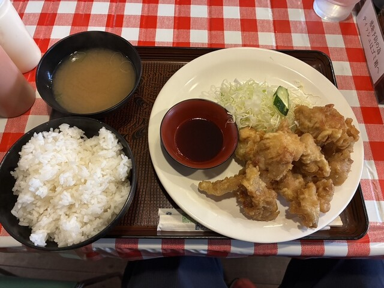

昔ながらの洋食屋「レストラン金鯱」
昭和のぬくもりを感じる、レトロな雰囲気漂う外観。地元の人々に長く愛され続ける当店は、一口食べればどこか懐かしくて心まで温かくなる、そんなホッとする味わいを楽しめる名店です。

ボリューム満点！自慢の定食
サクサクの衣に包まれた肉汁あふれるジューシーな唐揚げは絶品！山盛りのふっくらご飯と、お出汁の効いたお味噌汁のセットで、お腹も心も大満足間違いなしのメニューです。

店舗情報
| 所在地 | 〒468-0073 愛知県名古屋市天白区塩釜口2丁目801 |
|---|---|
| 電話番号 | 052-833-626 |
| 営業時間 |
月曜日 11時00分～16時00分 火曜日 11時00分～16時00分 水曜日 11時00分～16時00分 木曜日 11時00分～16時00分 金曜日 11時00分～16時00分 土曜日 11時00分～16時00分 日曜日 定休日 |